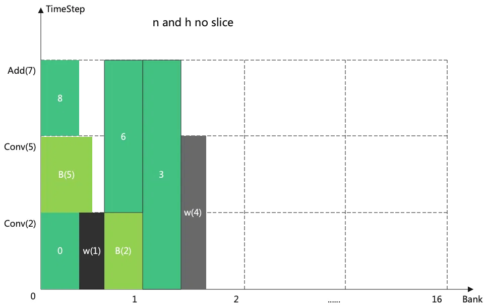
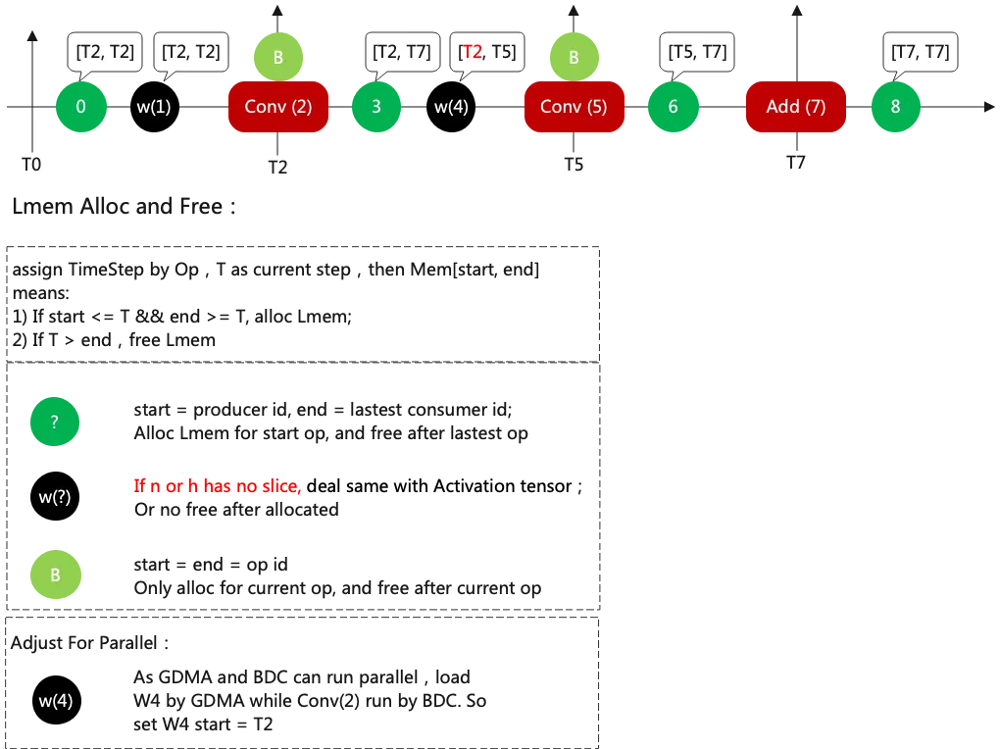
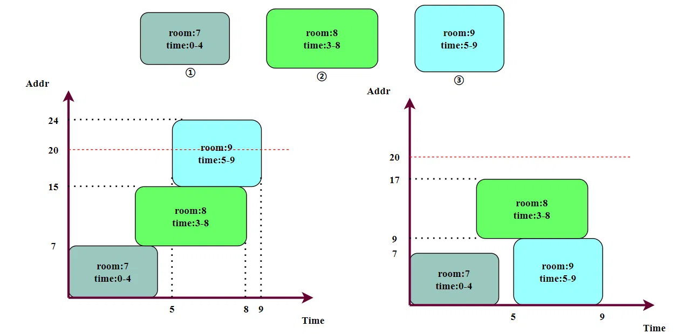
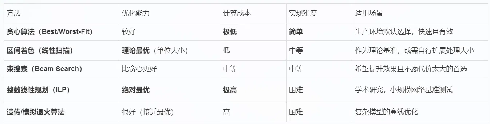

# 前言
本篇文章总结【张量生命周期优化】算法。
作为初学者，错误在所难免，还望不吝赐教。
# 介绍
AI 编译器设计中用于神经网络模型推理的内存管理模块， 通常被称为内存分配规划 或 张量生命周期优化。
为了减少内存占用，提高内存利用率，对 Tensor 的内存分配和生命周期的管理必不可少。
内存分配就像是个拼图游戏，在二维坐标中，横轴是时间，纵轴是内容空间，然后将神经网络模型推理过程中需要用到的内存块， 拼到这个二维坐标中。
神经网络模型推理主要涉及三部分 Tensor 内存占用：输入输出 tensor、权重 tensor、临时中间 tensor。将这些 tensor 拼接到如下的坐标轴中，横轴是内存空间，纵轴是周期 TimeStep，合理分配，以最大化内存利用率。
如下图

按照神经网络的执行顺序（拓扑顺序）来划分周期，以下面一个网络结构为例，周期可以如下划分。

# 算法
只考虑静态内存分配。动态内存分配的 tensor 大小不固定、形状不固定，可能需要在推理过程中边推理边分配内存。但是静态情况下，需要开辟的空间时已知的。
# 贪心算法
贪心算法的 “贪心” 体现在：在为当前要分配的张量做决策时，算法只着眼于 “当前这一步” 所能找到的最优解（即最能节省当前内存空间的放置位置），而不会为了全局最优（整个推理过程的绝对最低峰值内存）去考虑未来的张量该如何分配。这是一种局部最优（Local Optimal）策略，期望通过每一步的局部最优选择，最终得到一个接近全局最优的可行解。
1. 生命周期分析：首先，遍历计算图，为每个张量（Tensor）确定其 “出生时间”（定义或计算完成时）和 “死亡时间”（最后一次被使用时）。
2. 排序：将所有的张量按照其 “出生时间” 排序。
3. 分配：模拟一个从低地址到高地址的内存空间，可以用一个链表来存放。初始情况下链表中只有一个拥有所有空间、未占用的内存块。按顺序处理每个张量：检查当前所有未分配内存块，找到一个足够大的空闲内存块来存放新张量。张量生命周期结束时，即使释放对应的内存块，如果释放时前后内存连续，可以将其融合为一个大的内存块。
寻找空闲块的策略：
- 首次适应（First-Fit）：从低地址开始扫描，找到第一个足够大的空闲块就分配。
- 最佳适应（Best-Fit）：扫描所有空闲块，找到能满足需求且大小最接近的空闲块进行分配，以减少内存碎片。
- 最坏适应（Worst-Fit）：总是选择最大的空闲块进行分配，试图避免产生非常小的碎片。
贪心算法的优点：
高效：它的决策非常快，通常是 O (n) 或 O (n log n) 的复杂度，适合在编译器中快速完成内存规划。
有效：对于大多数神经网络计算图，张量的生命周期分布使得这种 “短视” 的策略能得出一个非常不错、甚至是最优的解。
实现简单：逻辑清晰，易于实现和调试。
贪心的局限性：
局部最优：由于缺乏全局视野，它无法保证结果一定是全局最优（峰值内存最低）的。在某些特定的张量生命周期和大小分布下，它可能会产生碎片或做出次优的决策。
受分配策略影响：使用 First-Fit, Best-Fit, 还是 Worst-Fit，会得到不同的结果，需要根据实际情况进行选择。
比如贪心算法会造成左图的情况，其显然不如右侧的分配方式好。

# 束搜索算法
束搜索是贪心算法的一种优雅扩展，它在 “每一步的局部最优” 和 “穷举搜索的全局最优” 之间找到了一个非常好的平衡点。
- 贪心算法：在每一步，只选择当前看起来最好的一个选项，然后走下去，永不回头。它没有前瞻性。
- 穷举搜索：考虑所有可能的路径，最终一定能找到全局最优解，但计算成本无法承受。
- 束搜索：是两者的折中。它在每一步不是只保留 1 个候选解，而是保留最好的 k 个候选解（k 称为束宽）。这个 k 是一个可调的参数，k=1 时就是贪心算法，k=∞ 时就是穷举搜索。
假设我们按张量的开始时间排序后，得到一个待分配序列 [T1, T2, T3, ..., Tn]，束宽为 k。
1. 初始化：
- 创建一个集合
beam，它代表当前代的候选状态。初始时，它只包含一个状态：空的内存空间，峰值内存为 0，下一个要分配的是 T1。 - beam = [initial_state]
2. 循环（对于每一个要分配的张量）：
a. 生成候选：对于 beam 中的每一个当前状态，生成所有可能分配下一个张量的方式。每个方式都会产生一个新的后继状态。
- 例如，从当前状态 S 出发，分配 Ti 可能有 3 种方式：放入空闲块 A、放入空闲块 B、放到堆顶。这会生成 3 个新的状态 S_A, S_B, S_C。
b. 排序与剪枝： - 将所有新生成的后继状态（来自
beam中所有父状态）合并到一个大列表中。 - 根据评估函数（即当前的峰值内存）对这个大列表进行排序，选出最好的 k 个状态。
- 丢弃掉所有其他状态。
- 更新
beam为这 k 个最好的后继状态。
c. 前进：处理下一个张量 T (i+1)。
3. 终止： - 当所有张量都分配完毕后，
beam集合中的 k 个状态就代表了 k 个完整的内存分配方案。 - 从中选择峰值内存最小的那个方案作为最终结果。
# 总结：
还有很多其他的算法，总结如下：

# 绘图
可以通过绘制甘特图来检查 Tensor 生命周期的分配情况。可以将信息输出为以下 .csv 文件：
tensor_name,size,offset,start_time,end_time | |
conv1_weight,102400,0,1,10 | |
layer1_activation,204800,102400,5,15 | |
pool1_output,102400,102400,16,25 | |
conv2_weight,204800,0,11,30 | |
layer2_activation,409600,204800,20,35 | |
output,102400,614400,36,40 |
使用 Python 库来绘制甘特图，如下代码已经将数据进行归一化。
import matplotlib.pyplot as plt | |
import matplotlib.patches as patches | |
import pandas as pd | |
import numpy as np | |
# 读取 CSV | |
df = pd.read_csv('memory_plan.csv') | |
# 计算相对比例 | |
max_time = df['end_time'].max() | |
max_memory = (df['offset'] + df['size']).max() | |
# 归一化到 [0, 1] 范围 | |
df['norm_start'] = df['start_time'] / max_time | |
df['norm_end'] = df['end_time'] / max_time | |
df['norm_offset'] = df['offset'] / max_memory | |
df['norm_size'] = df['size'] / max_memory | |
fig, ax = plt.subplots(figsize=(14, 8)) # 调整画布大小 | |
# 为每个 Tensor 绘制一个水平矩形条 | |
colors = plt.cm.tab10(np.linspace(0, 1, len(df))) | |
for i, row in df.iterrows(): | |
rect = patches.Rectangle( | |
(row['norm_start'], row['norm_offset']), # (x, y) 左下角坐标 | |
row['norm_end'] - row['norm_start'], # 宽度 | |
row['norm_size'], # 高度 | |
linewidth=1, edgecolor='black', facecolor=colors[i], | |
alpha=0.7, | |
label=row['tensor_name'] | |
) | |
ax.add_patch(rect) | |
# 在矩形中部添加 Tensor 名称 | |
ax.text( | |
(row['norm_start'] + row['norm_end'])/2, | |
row['norm_offset'] + row['norm_size']/2, | |
row['tensor_name'], | |
ha='center', | |
va='center', | |
fontsize=9, | |
bbox=dict(boxstyle="round,pad=0.3", facecolor="white", alpha=0.7) | |
) | |
# 设置图表属性 | |
ax.set_xlabel('Normalized Time Step') | |
ax.set_ylabel('Normalized Memory Address') | |
ax.set_title('Neural Network Memory Allocation Timeline\nPeak Memory: {:,} Bytes'.format(max_memory)) | |
# 添加网格 | |
ax.grid(True, linestyle='--', alpha=0.7) | |
# 添加图例 | |
ax.legend(bbox_to_anchor=(1.05, 1), loc='upper left') | |
# 调整布局 | |
plt.tight_layout() | |
# 保存和显示 | |
plt.savefig('memory_timeline_normalized.png', dpi=150, bbox_inches='tight') | |
plt.show() |
# 后记
本博客目前以及可预期的将来都不会支持评论功能。各位大侠如若有指教和问题，可以在我的 github 项目 或随便一个项目下提出 issue，并指明哪一篇博客，我看到一定及时回复！